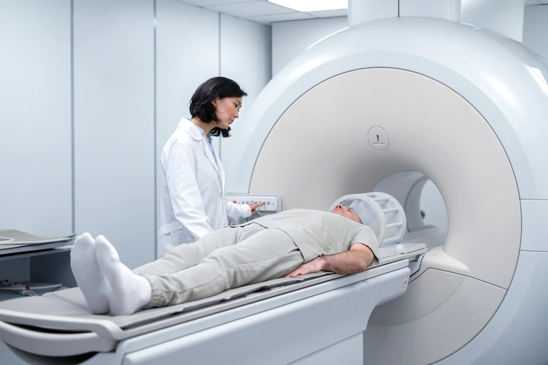
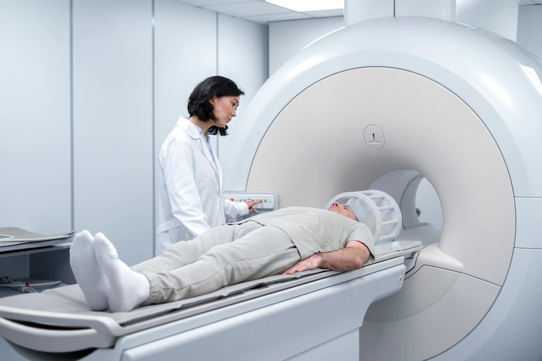
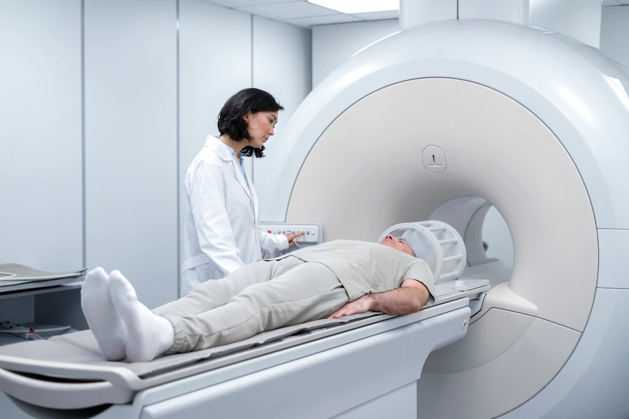
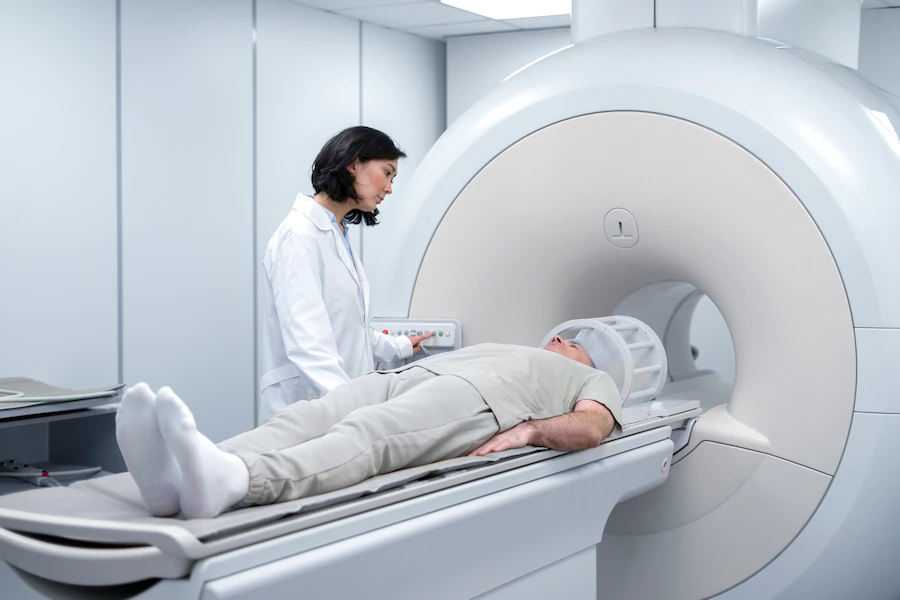

Radiology
 

 

At Sanjeevani Hospital, we are committed to providing the highest quality imaging services with a focus on accuracy, efficiency, and patient comfort. Our team of experienced radiologists and technologists uses state-of-the-art technology to deliver precise diagnostic imaging that is critical for accurate diagnosis and effective treatment planning. We understand the vital role that imaging plays in healthcare, and we are dedicated to offering comprehensive services in a caring and supportive environment. Our practice offers a full range of radiology services, including X-rays, MRIs, CT scans, ultrasounds, and more. Each member of our team is trained to use advanced imaging techniques to capture detailed images that help guide your healthcare provider’s decisions. We prioritize safety, ensuring that all procedures are performed with the utmost care and minimal exposure to radiation. At [Your Radiology Practice Name], patient care is at the heart of everything we do. We strive to make the imaging process as comfortable and stress-free as possible, with a focus on clear communication and compassionate care. Whether you are here for a routine exam or a more specialized study, you can trust that our team is dedicated to providing you with the highest standard of service. Thank you for choosing [Your Radiology Practice Name] as your imaging partner. We are honored to play a key role in your healthcare journey and look forward to providing you with the quality care you deserve.